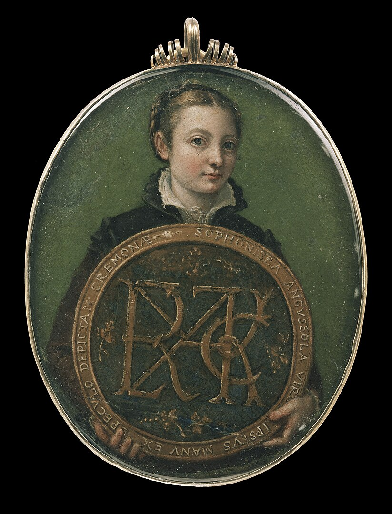

 Also known as Sophonisba Angussola or Sophonisba Anguisciola, was an Italian Renaissance painter born in Cremona to a relatively poor noble family. She received a well-rounded education that included the fine arts, and her apprenticeship with local painters set a precedent for women to be accepted as students of art. As a young woman, Anguissola traveled to Rome where she was introduced to Michelangelo, who immediately recognized her talent, and to Milan, where she painted the Duke of Alba. The Spanish queen, Elizabeth of Valois, was a keen amateur painter and in 1559 Anguissola was recruited to go to Madrid as her tutor, with the rank of lady-in-waiting. She later became an official court painter to the king, Philip II, and adapted her style to the more formal requirements of official portraits for the Spanish court. After the queen's death, Philip helped arrange an aristocratic marriage for her. She moved to Sicily, and later Pisa and Genoa, where she continued to practice as a leading portrait painter. 2
Her contemporary Giorgio Vasari wrote that Anguissola "has shown greater application and better grace than any other
woman of our age in her endeavors at drawing; she has thus succeeded not only in drawing, coloring and painting from nature,
and copying excellently from others, but by herself has created rare and very beautiful paintings. 3

Fun fact! On 4 August 2017 a crater on Mercury was named after her. 4